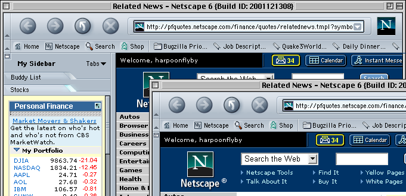
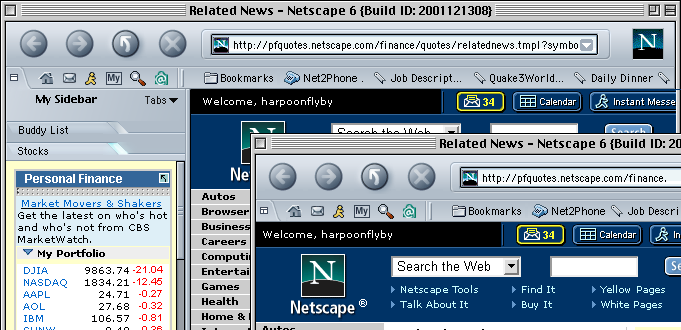
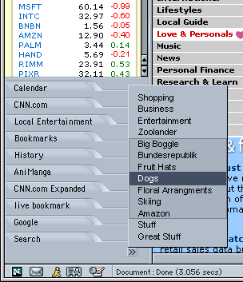

|
Mach V |
UI Discussion for Review |
|
Sidebar Design Issues - Mach V |
Last Modification:
|
|
Author Marlon Bishop |
Status: Implementable Checkpoints |
|
Contents
|
Feature Team Todd Pringle |
General Topics of Discussion
- Splitter Grippy should use a custom cursor which indicates opening or closing when hovered.
- Sidebar Courtesy - automatic opening/closing policy: as a general rule for tabs, never open sidebar once a user deliberately closed it. First, must ask with unobtrusive feature alerts (i.e. paper clip, apple sheets (OSX))
- 3 States of sidebar:
- open
- closed (or collapsed)
- hidden - provided through View> Hide Sidebar [F9], or toolbar customization - now that we enforce "sidebar courtesy" by providing a less salient notification before opening and closing, users will be less inclined to disable sidebar completely.
Exposing and Closing Sidebar - The "Arrow" Concept
An idea which came up in discussion was to use an arrow button to provide a stationary hit zone (i.e. a "doorknob is located on the door"), and better visual affordance to Sidebar closing and opening (thereby replacing the current "X" close box for closing sidebar and hiding)
- Black Arrow Button - direction of arrow is ambiguous in meaning - to the right does that mean "open sidebar", or does it mean "sidebar is disclosed"?

- Large Clickable Arrow - suffers from same ambiguity as above

- Sidebar Icon Button -
 /
/  = Sidebar / No Sidebar. Using a widget-like icon to communicate the, "window state" lends more familiarity than a plain arrow. The icon has some familiarity from other applications as well. closing/opening is no longer ambiguous.
= Sidebar / No Sidebar. Using a widget-like icon to communicate the, "window state" lends more familiarity than a plain arrow. The icon has some familiarity from other applications as well. closing/opening is no longer ambiguous.

- Sidebar Icon / Toolbar Button - an old idea rehashed, this idea puts a sidebar button on the toolbar, doing away with the splitter when closed (one reason why many users "hide" the sidebar). This has some other interesting benefits in that when closed it draws more attention to itself than number 3 - which i feel makes up for absence of a splitter during the closed state. Although this eats up some more space from the component bar/personal toolbar area, we are recuperating some toolbar realestate by removing toolbar collapsing functionality, which had very low utility (actually not only it's fairly useless but also a common trap for confused users) - Toolbar hiding/viewing functionality is still accessible from menus, and will be from context menus. (as well as through toolbar custiomization when that is available). There are 2 visual styles for this idea, "integrated", or "floating":
- This model LESSENS the need for having 3 physical states of toolbar - open, closed, and hidden. (though with toolbar customization, F9, and menu View>Hide Toolbar, hidden state would still be provided)
- with Integrated Appearance

- with Floating Appearance
Tab Overflow Managment
use a button with a double greater than symbol (Win standard), to produce a submenu with tab titles to select from. As indicated in illustration below, a selection zone is also provided as a way of subselecting entire segments of tabs which have fallen off the visible area. The tabs that are within the zone would replace the current display set of sidebar, with the direct selected tab opened. Another crucial aid in exposing this overflow concept to the user (not shown) will be to show the last tab as ontop of a "stack" of tabs, as if "a tab behind a tab behind a tab". This overlapping tab area would be the natural place for users to investigate this feature.
